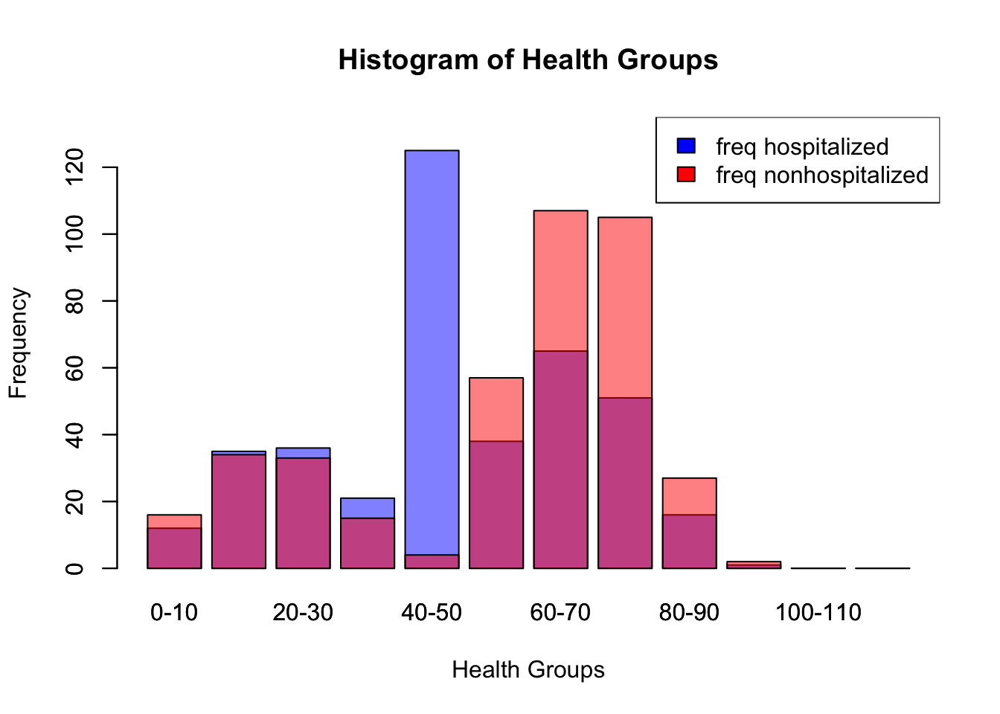
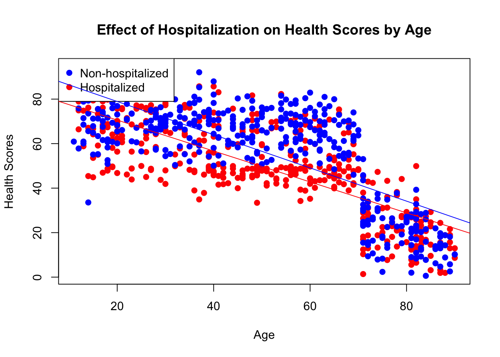
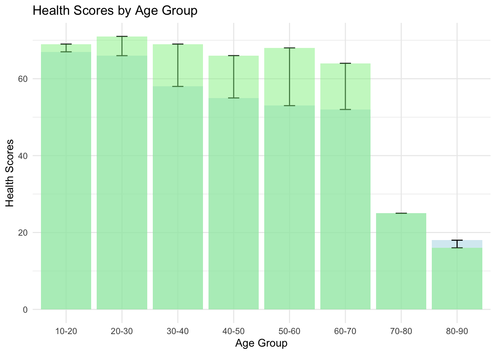

# Generate Gender (1 = Male, 0 = Female)
gender <- sample(c(0, 1), n, replace = TRUE, prob = c(0.5, 0.5))We don’t know if Covid ages us epigenetically
How selection bias rules everything around us
covid
selection
bias
simulation
In the following post I will be exploring the sometimes claimed effect of Covid-19 hospitalization on epigenetic aging. The core aim of this writing is to show that causal or experimental methods are required to determining if this claim is true or not and current research is insufficient for this task.
I provide some minor background on the studies that incited this post, including some of the effects they could control and some details that caution against the current online interpretation of them.
I generate data without explicitly modelling an effect from Covid-19 keeping in mind semi-realistic distributions of age, gender, and underlying health.
Explore and analyze the simulated data to determine if we can discover a false effect of Covid-19 hospitalization on our measure of underlying health given two rates of hospitalization dependent on underlying health.
Introduction
Recently I saw a Tweet that made an interesting claim: that Covid-19 aged people, I looked in the replies and found that there were tables claiming that babies were aged 35 years by a Covid-19 infection. I got curious and looked deeper into the cited studies and found that this and many tweets like it have made causal claims where they shouldn’t have. The claim is that getting infected with Covid-19 leads to epigenetic aging, however the paper only deals with hospitalized patients so some authors are already exaggerating the scope of this potential problem. Setting that aside I thought this would be a good demonstration of how the old cliche of correlation does not equal causation should still be kept in mind and how we should be hesitant to accept causal framings without seeing the modelling framework used by study authors.
To be clear I am not going to make the argument here that there isn’t an effect of Covid-19 on epigenetic aging factors, however I am going to provide an insight into why we cannot interpret the linked study causally (as even the authors write!). There are other factors that increase susceptibility to hospitalization from Covid-19 such as asthma, obesity, or advanced age.
In order to demonstrate how an underlying susceptibility to Covid-19 may explain the differential epigenetic age between those who were hospitalized and those who were not in the cited study I will simulate some data using some stylized facts about health over a human lifespan that we can then use to model a population.
Of note, while the data for the Covid-19 infected patients used by the study excluded individuals for the following risk factors:
The set of risk factors for getting hospitalized with Covid-19 not covered by this exclusion are quite large. Additionally, the use of a hard cutoff for obesity is also likely to cause trouble, there is no special property of a BMI of 30 that leads to increased death versus a BMI of 29. Realistically, it is very hard to exclude everything that could muck about with our data, that is normal and a consequence of a real world which is messy. This is part of my belief that this study is probably insufficient for determining Covid-19 epigenetic aging increases in addition to the fact that non-causal methods were used.
Another study cited in the same vein of research but with similar limitations is this one where a similar set of modelling restrictions exist. Of note:
“The two groups considered in this study were not significantly different in terms of age, sex, and known clinical conditions before SARS-CoV-2 infection, except for a relatively higher incidence of BMI > 30 (15.3% vs. 9%) in the post-COVID-19 population compared with controls, as well as a record of more frequent lung diseases (20.2% vs. 1.6%; see Table 1).”
A record of more frequent lung diseases and a higher incidence of obesity are both going to be impediments in determining the true effect of Covid-19 on these measures of epigenetic age versus the effect of lung disease and obesity.
To put it succinctly, the argument I am putting forward here is that there is a possible reverse relationship that could be happening here. Whereas the current belief of some may be that Covid-19 hospitalization has some effect on epigenetic aging (modeled here by health scores) we can find the same effect from using the fact that people with poorer health are more likely to be hospitalized from Covid-19 without modelling the effect of Covid-19 on epigenetic aging at all.
Simulation Setup
In order to make sure that our simulation fits some of the stylized facts of the Covid Crisis, I wanted to ensure the population we generated was loosely similar to the real population in terms of gender and age, the exact distribution of age doesn’t really matter too much for our effect as we use stratified sampling later on to get equal groups from each age group (of 10 years). The gender parameter is generated with a 50/50 distribution between male and female, reflecting the general gender distribution in the population.
Age is generated with a normal distribution, centered around 50 years with a standard deviation of 15, capturing a broad age range representative of the population. Negative ages are corrected, ensuring realism in the data.
Health scores are generated with a normal distribution, centered around 75 with a standard deviation of 10. This represents a baseline health status for individuals in the simulation. The negative correlation between age and health score mirrors the observation that older individuals tend to have poorer health outcomes in general but especially when infected with COVID-19. A stronger additive effect was also included for individuals over the age of 70 to reflect the elevated risk that comes with advanced age.
# Generate Age (assuming a somewhat realistic distribution)
age <- round(rnorm(n, mean = 50, sd = 15))
age[age < 0] <- 0 # Correcting for any negative ages due to randomness
# Generate normally distributed health scores
health_scores <- rnorm(n, mean = 75, sd = 10)
base_age_effect <- -0.2 # Base effect for those under 70
additional_effect_over_70 <- -0.5 # Additional negative effect for those over 70
# Apply the age effect
health_scores <- ifelse(age <= 70,
health_scores + (base_age_effect * (age)),
health_scores + ((base_age_effect + additional_effect_over_70) *(age)))
# Ensure health scores do not go below a minimum threshold, if necessary
# For example, if health scores should not be negative:
health_scores[health_scores < 0] <- 0
# Create a data frame
synthetic_data <- data.frame(gender, age, health_scores)Hospitalization likelihood is determined based on the health score, with a threshold set at 50. Individuals with health scores below the threshold have a higher chance of hospitalization (80%), reflecting the increased risk of severe outcomes for individuals with poorer health. Individuals with health scores at or above the threshold have a lower chance of hospitalization (5%), representing the lower risk of severe outcomes for healthier individuals.
hospitalization_threshold <- 50
hospitalization_chance_high <- 0.8 # Chance of hospitalization if health score is under 50
hospitalization_chance_low <- 0.05 # Chance of hospitalization if health score is 50 or above
# Generate hospitalization status based on health score
synthetic_data$hospitalized <- ifelse(synthetic_data$health_scores < hospitalization_threshold,
rbinom(n, 1, hospitalization_chance_high),
rbinom(n, 1, hospitalization_chance_low))
# Check the hospitalization rate by health score condition
table(synthetic_data$hospitalized, synthetic_data$health_scores < hospitalization_threshold)
FALSE TRUE
0 80902 2865
1 4308 11925Data Grouping
We filter out the edge cases here and add some age group breaks to make it such that there are groups we can then use to see how much the implied age of a person is increased from Covid-19 infection. I also use this time to display the age and hospitalization table results, we can see a fairly strong age effect where the oldest groups even have more individuals hospitalized than not.
synthetic_data <- synthetic_data %>%
filter(age <= 90) %>% filter(age > 10)
# Define the breaks for the groups, extending the upper limit to cover all ages above 100
breaks <- seq(10, 90, by = 10)
# Ensure breaks are unique and in ascending order
breaks <- unique(sort(breaks))
# Define the labels for the groups
labels <- c("10-20", "20-30", "30-40", "40-50", "50-60", "60-70", "70-80", "80-90")
# Group the variable
synthetic_data <- synthetic_data %>%
mutate(age_group = cut(age, breaks = breaks, labels = labels))
# Create a contingency table of hospitalization by age group
hospitalization_by_age_group <- table(synthetic_data$hospitalized, synthetic_data$age_group)
# Print the table
hospitalization_by_age_group
10-20 20-30 30-40 40-50 50-60 60-70 70-80 80-90
0 1870 6637 15141 22896 21688 13389 1328 327
1 126 519 1339 2379 2724 2098 5261 1487We repeat the above procedure but instead we group by health scores so further visualizations are improved.
# Calculate the maximum value of health_scores
max_health_scores <- max(synthetic_data$health_scores)
# Calculate the maximum value for the breaks (nearest multiple of 10 above max_health_scores)
max_breaks <- ceiling(max_health_scores / 10) * 10
breaks <- seq(0, max(synthetic_data$health_scores), by = 10) # Extend to cover the maximum value
# Add an additional break at the end
breaks <- c(breaks, max_breaks + 10)
# Group the variable
synthetic_data <- synthetic_data %>%
mutate(health_groups = cut(health_scores, breaks = breaks, labels = c("0-10", "10-20", "20-30", "30-40", "40-50", "50-60", "60-70", "70-80", "80-90", "90-100", "100-110", "110+")))
synthetic_data <- na.omit(synthetic_data)
hospitalized <- synthetic_data[(synthetic_data$hospitalized == 1), ]
nonhospitalized <- synthetic_data[(synthetic_data$hospitalized == 0), ]Sampling
Finally I observed that there were similar distributions of age in the real data so in order to construct our sample to be similar we use stratified sampling to get equal groups of 50 for each age group in our synthetic data.
table(hospitalized$age_group)
10-20 20-30 30-40 40-50 50-60 60-70 70-80 80-90
126 519 1339 2379 2724 2098 5202 1390 table(nonhospitalized$age_group)
10-20 20-30 30-40 40-50 50-60 60-70 70-80 80-90
1870 6637 15141 22896 21688 13389 1314 311 strata_sizes <- rep(50, length(unique(synthetic_data$age_group)))
# Perform stratified sampling
strata_sample_hosp <- strata(data = hospitalized,
stratanames = c("age_group"),
size = strata_sizes,
method = "srswor")
strata_sample_nonhosp <- strata(data = nonhospitalized,
stratanames = c("age_group"),
size = strata_sizes,
method = "srswor")
sampled_data_hosp <- getdata(hospitalized, strata_sample_hosp)
sampled_data_nonhosp <- getdata(nonhospitalized, strata_sample_nonhosp)“Effect of Hospitalization” on health scores
Below we can see the frequency of membership into different groupings of health_scores, the grouping for hospitalized with the highest membership is the 40-50 group. The health scores of the hospitalized group are lower on average as well. Some of this boundary effect is because the health score cutoff for a higher probability of getting hospitalized is 50 so this behavior is expected.
health_groups_nonhosp <- as.data.frame(table(sampled_data_nonhosp$health_groups))
health_groups_hosp <- as.data.frame(table(sampled_data_hosp$health_groups))
barplot(health_groups_hosp$Freq, names.arg = health_groups_hosp$Var1, xlab = "Health Groups", ylab = "Frequency", col = rgb(0,0,1,0.5), main = "Histogram of Health Groups", ylim = c(0, max(health_groups_hosp$Freq, health_groups_nonhosp$Freq) + 10))
barplot(health_groups_nonhosp$Freq, names.arg = health_groups_nonhosp$Var1, col = rgb(1,0,0,0.5), add = TRUE)
# Add a legend
legend("topright", legend = c("freq hospitalized", "freq nonhospitalized"), fill = c("blue", "red"))
We can even construct the (unsourced as far as I could tell when looking through the linked paper and supplementary tables) image shared by some using our data! The results are not as granular (I use 10 year groups rather than 5) but we can get a similar table with our data.
average_health_by_age <- aggregate(health_scores ~ age_group, data = sampled_data_hosp, FUN = mean)
# average_health_by_age
average_health_by_age_non <- aggregate(health_scores ~ age_group, data = sampled_data_nonhosp, FUN = mean)
# average_health_by_age_non
health_score_averages <- dplyr::left_join(average_health_by_age, average_health_by_age_non, by = "age_group")
health_score_averages$diff <- health_score_averages$health_scores.y - health_score_averages$health_scores.x
health_score_averages <- health_score_averages %>%
rename(hospitalized_health_score = health_scores.x,
non_hospitalized_health_score = health_scores.y)
health_score_averages$hospitalized_health_score <- round(health_score_averages$hospitalized_health_score)
health_score_averages$non_hospitalized_health_score <- round(health_score_averages$non_hospitalized_health_score)
health_score_averages$diff <- round(abs(health_score_averages$hospitalized_health_score - health_score_averages$non_hospitalized_health_score))
convert_to_average_age <- function(age_range) {
age_split <- as.numeric(strsplit(as.character(age_range), "-")[[1]])
return(mean(age_split))
}
# Function to find the closest age group
find_closest_age_group <- function(score) {
# Calculate the absolute difference
health_score_averages$score_diff <- abs(health_score_averages$non_hospitalized_health_score - score)
# Find the row with the minimum difference
closest <- health_score_averages[which.min(health_score_averages$score_diff), ]
return(closest$age_group)
}
# Apply the function for each hospitalized health score
health_score_averages$matched_age_group <- sapply(health_score_averages$hospitalized_health_score, find_closest_age_group)
health_score_averages$chronological_age <- sapply(health_score_averages$age_group, convert_to_average_age)
health_score_averages$matched_age_group <- sapply(health_score_averages$matched_age_group, convert_to_average_age)
health_score_averages <- health_score_averages %>%
rename(covid_affected_age = matched_age_group)
health_score_averages$diff <- health_score_averages$covid_affected_age - health_score_averages$chronological_age
print(health_score_averages[, c('chronological_age', 'covid_affected_age', 'diff')]) chronological_age covid_affected_age diff
1 15 45 30
2 25 45 20
3 35 65 30
4 45 65 20
5 55 65 10
6 65 65 0
7 75 75 0
8 85 85 0We can see here the relationship between health scores, age, and hospitalization. Hospitalization is associated with a lower average health score, age as well, and the interaction between the two factors actually appears to diminish over time, as the distance between the two lines of best fit decreases as age increases.
combined_data <- rbind(sampled_data_hosp, sampled_data_nonhosp)
# Create a scatter plot
plot(combined_data$age, combined_data$health_scores,
xlab = "Age", ylab = "Health Scores",
main = "Effect of Hospitalization on Health Scores by Age",
pch = 19, col = ifelse(combined_data$hospitalized == 1, "red", "blue"))
# Add a legend
legend("topleft", legend = c("Non-hospitalized", "Hospitalized"),
col = c("blue", "red"), pch = 19)
# Fit a linear regression line for each group
abline(lm(health_scores ~ age, data = combined_data[combined_data$hospitalized == 0,]), col = "blue")
abline(lm(health_scores ~ age, data = combined_data[combined_data$hospitalized == 1,]), col = "red")
We see the same difference in our age groupings, the hospitalized among all age groups have lower health scores.
ggplot(health_score_averages, aes(x = age_group)) +
geom_bar(aes(y = hospitalized_health_score), stat = "identity", fill = "lightblue", alpha = 0.5) +
geom_errorbar(aes(ymin = hospitalized_health_score, ymax = non_hospitalized_health_score), width = 0.2) +
geom_bar(aes(y = non_hospitalized_health_score), stat = "identity", fill = "lightgreen", alpha = 0.5) +
labs(title = "Health Scores by Age Group",
y = "Health Scores",
x = "Age Group") +
theme_minimal()
And look! The differences between the health scores in the hospitalized and non hospitalized were found to be statistically significant
t_test_result <- t.test(sampled_data_hosp$health_scores, sampled_data_nonhosp$health_scores)
t_test_result
Welch Two Sample t-test
data: sampled_data_hosp$health_scores and sampled_data_nonhosp$health_scores
t = -4.585, df = 789.19, p-value = 5.278e-06
alternative hypothesis: true difference in means is not equal to 0
95 percent confidence interval:
-9.985862 -3.998642
sample estimates:
mean of x mean of y
49.18876 56.18101 Conclusion
Our study designs a scenario that sidesteps modeling COVID-19’s direct biological effects on epigenetic aging, focusing instead on how pre-existing health conditions influence hospitalization rates. This approach sheds light on the potential for selection bias to simulate a ‘COVID effect’ on aging metrics, positing that poorer health could lead to higher hospitalization rates, thus skewing epigenetic aging data. By excluding the virus’s direct biological impact from our model, we aim to show that health disparities may account for the observed variations in aging among hospitalized versus non-hospitalized groups. This emphasizes the need to distinguish correlation from causation in attributing changes in epigenetic aging to COVID-19, cautioning against conflating virus effects with the pre-existing health conditions of those most at risk.
Overall we need additional information (as the authors themselves write), we shouldn’t draw conclusions about the effect of Covid-19 on epigenetic aging without using a different modelling strategy that is causal.